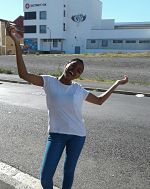

Lihle
Menzeleleli

Which city?

Thailand is a Southeast Asian country. It's known for tropical beaches, opulent royal palaces, ancient ruins and ornate temples displaying figures of Buddha. In Bangkok, the capital, an ultramodern cityscape rises next to quiet canalside communities and the iconic temples of Wat Arun, Wat Pho and the Emerald Buddha Temple (Wat Phra Kaew). Nearby beach resorts include bustling Pattaya and fashionable Hua Hin.
Bangkok
Bangkok welcomes more visitors than any other city in the world and it doesn't take long to realise why. This is a city of contrasts with action at every turn; marvel at the gleaming temples, catch a tuk tuk along the bustling Chinatown or take a longtail boat through floating markets
Foreign Language:
English Phrase: |
Thai Phrase: |
|---|---|
| Good morning. | S̄wạs̄dī txn chêā. |
| How are you? | Khuṇ pĕn xỳāngrị? |
| I am good, thank you. | C̄hạn s̄bāy dī k̄hxbkhuṇ. |
Historical Places In Cape Town:
RSA Parliament
- The Parliament of South Africa is South Africa's legislature and under the country's current Constitution is composed of the National Assembly and the National Council of Provinces.
- It has undergone many transformations as a result of the country's tumultuous history.
- From 1910 to 1994, it was elected mainly by South Africa's white minority, before the first elections with universal suffrage were held in 1994.
Iziko Slave Lodge

- This Cathedral exists to give glory to God and to be a sign of God’s Kingdom in this city and nation.
- A compassionate and caring response to people and their needs.
- Engaging with social issues – justice, reconciliation and human health.
District Six

- The first stone was laid on 2 January 1666 and it was completed by April 1679.
- The materials used to build the Castle were local and included rock cut from the granite outcrop on Signal Hill, and blue slate and shells – transported from Robben Island
- In 1936 the Castle of Good Hope was declared a national monument